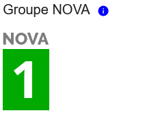
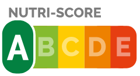

Ingrédients:
Petit pois doux
Petit pois doux
Labels, certifications, récompenses
| Informations nutritionnelles | tel que vendu pour 100g/100ml | Petit pois |
|---|---|---|
| Energie(kcal) | 79 Kcal | +5 % |
| Energie | 331 kj | +4 % |
| Matières grasses/Lipides | 0,8g | +18 % |
| dont Acide gras saturés | 0,2 g | +32 % |
| Glucides | 8,2 g | -16 % |
| Dont Sucres | 3 g | -7 % |
| Fibres alimentaires | 6,9 g | +36 % |
| Protéines | 6,1 g | +26 % |
| Sel | 0 g | -100 % |
| Score nutritionnelles - France | -13 % | |
| Nutri-Score | A |
Petit pois: surgelé
Quantité: 600g
Conditionnement: plastique
Marque:Picard le Bio
Origine
des ingrédients: Italie
Aliments non transformés ou minimalement transformés
Très bonne qualité alimentaire
aucun Allergènes connu.